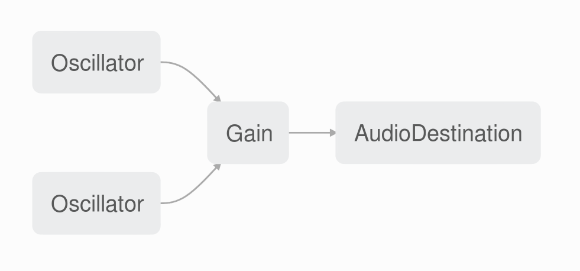

<style>

  * {
    box-sizing: border-box;
  }

  .slides>section {
    padding: 1% !important;
  }

  .midten {
    height: 100%;
    display: flex !important;
    flex-direction: column;
    justify-content: center;
  }

  .midten > * {
    text-align: center !important;
  }

  h1, h2, h3, h4 {
    text-align: left;
  }

  .reveal p {
    font-size: 150%;
  }

  img {
    border: none !important;
    background: inherit !important;
    box-shadow: none !important;
  }

  pre {
    font-size: 90% !important;
  }

  code {
    max-height: 100% !important;
  }

  .codeblock {
    background: black;
  }

</style>

<section class="midten">
  <h2>Audible Code</h2>
  <p>Stian Veum Møllersen / @mollerse</p>
  <p>BEKK</p>
</section>

<section class="midten">
  <h2 class="fragment">Jeg liker musikk.</h2>
  <aside class="notes">
    <p>Ok, jeg har en innrømmelse å komme med. - pause - Jeg liker musikk. Ok, de som
kjenner meg, eller bare har sett meg jobbe med headset på, ble kanskje ikke så
veldig overaska nå. Jeg har likt musikk så lenge jeg kan huske. Helt fra min
første CD med Ace of Base tidlig tidlig på 90tallet.</p>
  </aside>
</section>

<section class="midten">
  <h2 class="fragment">Jeg liker også programmering.</h2>
  <aside class="notes">
    <p>Dette er nok ikke like overaskende, med tanke på hvor vi befinner oss nå. Men
det jeg liker aller aller best med programmering er at det gir meg en mulighet
til kreativ utfoldelse. Skriv et par linjer med kode og du få de utroligste ting
til å dukke opp på pcskjermen din.</p>
  </aside>
</section>

<section class="midten">
  <h2>Musikk + Programmering = &lt;3</h2>
  <aside class="notes">
    <p>Tanken på å kombinere mine to favoritt-ting har alltid vært en drøm for meg.
Kanskje spesielt da jeg ikke duger på noen instrumenter, kanskje utenom
finger-trommer - der er jeg en skikkelig røver. Derfor ble jeg mildt sagt
hoppende glad når jeg oppdaget at jeg kunne generere min egen lyd med JavaScript
i nettleseren. YES! Nå er det min tur!</p>
  </aside>
</section>

<section class="midten">
  <h2>Enter WebAudio</h2>
  <aside class="notes">
    <p>WebAudio har eksistert i diverse former siden sirkus 2010. WebAudio har mange
spennende egenskaper, men i dag skal vi se litt nærmere på hva det kan tilby oss
i form av audio syntese - det å skape lyd.</p>
  </aside>
</section>

<section data-state="hello">
  <h2>Hello WebAudio</h2>
  <div class="codeblock">
      <pre><code class="js">var context = new AudioContext();</code></pre>
    <pre class="fragment"><code class="js">var oscillator = context.createOscillator();
var amp = context.createGain();</code></pre>
    <pre class="fragment"><code class="js">oscillator.connect(amp);
amp.connect(context.destination);</code></pre>
    <pre class="fragment"><code class="js">oscillator.start();</code></pre>
    <pre class="fragment"><code class="js">amp.gain.value = 1;</code></pre>
  </div>
</section>

<section class="midten">
  <h3>Her var det mye nytt på en gang</h3>
  <aside class="notes">
    <p>Her var det veldig mange nye begreper. Oscillators, Gain? Amp? Context?</p>
  </aside>
</section>


<section>
  <h2>The WebAudio graph</h2>
  
  <aside class="notes">
    <p>Hvis vi tegner opp det vi laga i et litt mer visuellt medium. Den første nye
tingen vi laga var en Oscillator. En oscillatorer en komponent som genererer et
signal med en gitt frekvens. Noen av dere husker det sikkert fra skolen. En Gain
er en annen type node som fungerer som en slags gate. Vi kan manipulere
gain-verdien til Gain-noden og det vil styre hvor mye av signalet fra
Oscillatoren som når AudioDestination. Dette kan vi utnytte til å skru av og på
lyden dynamisk.</p>
  </aside>
</section>

<section>
  <h2>Make some noise!</h2>
  <pre><code>function Note() {
  //Initialization and node-creation here

  function start() {
    amp.gain.value = 1;
  }
  function stop() {
    amp.gain.value = 0;
  }

  return {start, stop};
}</code></pre>
</section>

<section class="midten">
  <h2>MIDI &mdash; Musical Instrument Digital Interface</h2>
  <aside class="notes">
    <p>En standard som definerer en protokoll, digitale interfaces og connectors for musikkinstrumenter.</p>
  </aside>
</section>

<section data-state="hellomidi">
  <h2>Legge til MIDI-devices</h2>
  <pre><code>navigator.requestMIDIAccess()
  .then(midiConnected);</code></pre>
  <pre class="fragment"><code class="js">function midiConnected(midi) {
  for(entry of midi.inputs.values()) {
    entry.onmidimessage = function(msg) {
      var [code, note, velocity] = msg.data;

      code === 144 ? on(note) : off(note);
    };
  }
}</code></pre>
</section>

<section data-state="hello2">
  <h2>Spille ulike noter</h2>
  <pre class="fragment"><code class="js">function frequencyFromNoteNumber(note) {
  return 440 * Math.pow(2,(note-69)/12);
}

oscillator.frequency.value =
  frequencyFromNoteNumber(note);</code></pre>
</section>

<section data-state="hello3">
  <h2>Forandre sounden</h2>
  <pre class="fragment"><code class="js">oscillator.type = 'sawtooth';</code></pre>
</section>

<section data-state="basicsynth">
  <h2>Polyfonisk synth</h2>
  <pre><code>var notes = {};
function on(note) {
  var n = Note(note);
  notes[note] = n;
  n.start();
}
function off(note) {
  notes[note].stop();
  delete notes[note];
}</code></pre>
</section>

<section class="midten">
  <h2>The Supersaw</h2>
  <p class="fragment">Multiple detuned sawtooth oscillators. Heavily used in the EDM style of music.</p>
  <aside class="notes">
    <p>Originally from the Roland JP-8000. It was made to emulate more than one
sawtooth oscillator. Each sawtooth oscillator is slightly detuned against one
another. This sort of sound gained some notoriety in the early 2000s with the
rise of electronic dance music.</p>
  </aside>
</section>

<section data-state="supersaw">
  <h2>The Supersaw effect</h2>
  <pre class="fragment"><code class="js">function makeSaw(i, numSaws) {
  //Oscillator creation and init
  oscillator.detune.value =
    -detune + i * 2*(detune/(numSaws-1));
}</code></pre>
  <pre class="fragment"><code class="js">//Inside Note-function
for (var i = 0; i < numSaws; i++) {
  makeSaw(i, numSaws);
}</code></pre>
</section>

<section class="midten">
  <h2>Demo!</h2>
</section>

<section class="midten">
  <h2>Gratulerer!</h2>
  <p>Du er nå en musiker.</p>
</section>

<section class="midten">
  <h1>Thanks for listening!</h1>
  <p>Stian Veum Møllersen / @mollerse</p>
  <p>BEKK</p>
</section>
